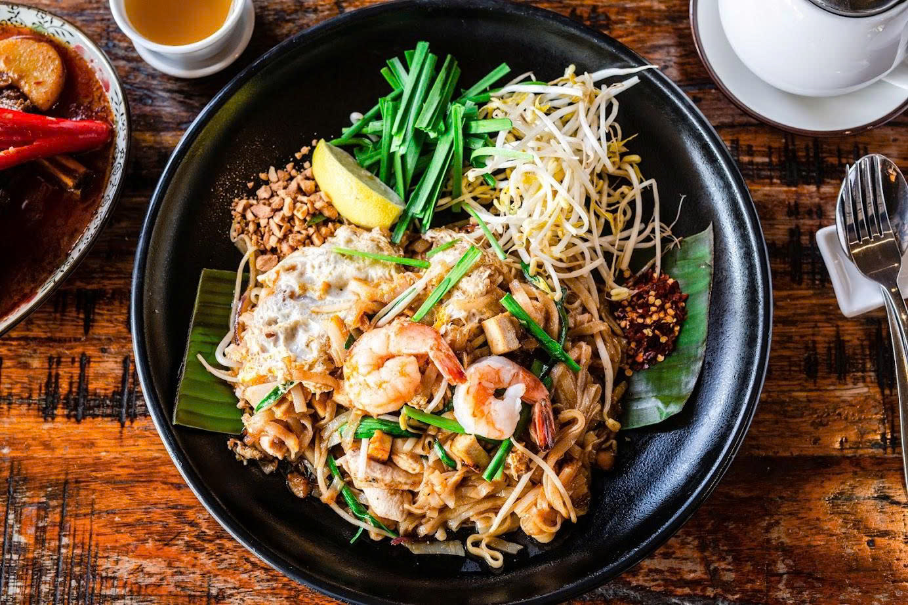
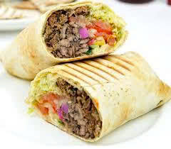
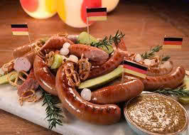
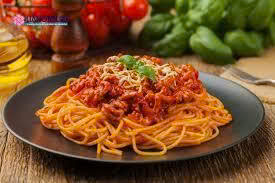

This website presents a collection of traditional foods from different countries around the world. Each dish represents the culture and unique flavors of its origin.
From Vietnamese pho to Italian spaghetti, these dishes highlight the diversity of global cuisine. The site is designed to be responsive and accessible across all devices and user preferences.




